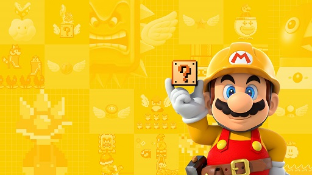
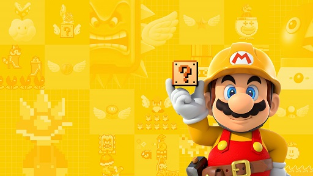

Desde la presente web podrás conocer todo lo que quieras y más sobre Nintendo Switch: el catálogo completo hasta la fecha, la categoría de los juegos, fechas de lanzamiento, precios y mucho más!!
 

A continuación se muestran algunos de los juegos ya disponibles:
| Juego | Categoría | Formato disponible |
|---|---|---|
| 1, 2, Switch! | Casual | Físico y digital |
| Arms | Lucha | Físico y digital |
| Dragon Ball Xenoverse 2 | Lucha | Físico y digital |
| Minecraft | Sandbox | Físico y digital |
| Pokkén Tournament DX | Lucha | Físico y digital |
| Sonic Forces | Plataformas | Físico y digital |
| Splatoon 2 | Shooter | Físico y digital |
| Super Mario Odyssey | Plataformas | Físico y digital |
| The Elder Scrolls V: Skyrim | Rol | Físico y digital |
| The Legend of Zelda: Breath of the Wild | Aventuras | Físico y digital |
| Xenoblade Chronicles 2 | Acción | Físico y digital |